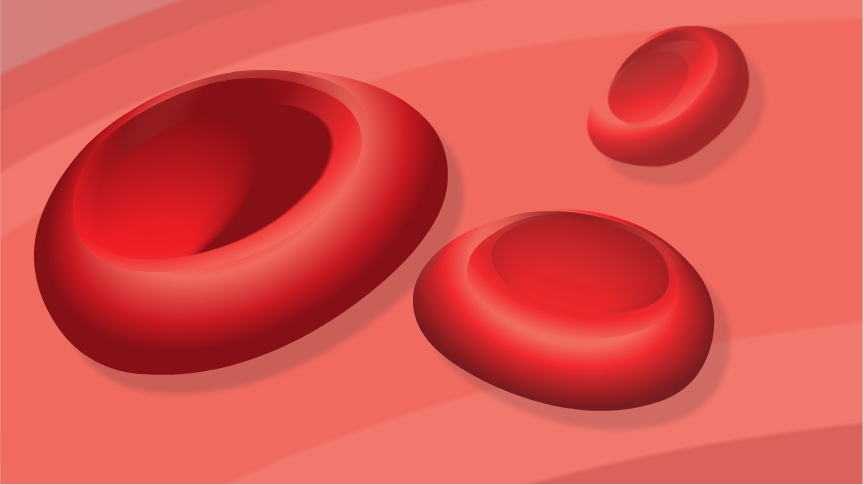

Vi har i de tidligere afsnit lært om blodets vej fra luften gennem lungerne og ud i blodet. Vi har lært, at blodet bliver pumpet rundt af hjertet, og at der et system af blodårer. Vi ved, at ilten er livsvigtig for vores celler, og at vores krop ikke kan fungere uden ilt. Men hvordan bliver ilten transporteret rundt med blodet?
Blodet består af røde og hvide blodlegemer samt plasma og blodplader. I dette afsnit vil vi kigge nærmere på de røde blodlegemer, da de er vigtige for transporten af ilt. De røde blodlegemer er runde som en cirkel og fladtrykte på midten. På Billede 1 kan du se et billede af et rødt blodlegeme.
Billede 1: Røde blodlegemer.
En stor del af de røde blodlegemer består af et protein, kaldet hæmoglobin. I hæmoglobinet findes en masse jern. Det er jernet, som farver vores blod rødt.
Det er hjertet, der pumper blodet rundt i vores blodårer. Når blodet bliver pumpet rundt, følger de røde blodlegemer med. Se Animation 1.
Animation 1: O2 indåndes og CO2 udåndes.
Når de røde blodlegemer løber forbi lungerne, er det hæmoglobinet, der binder ilten til det røde blodlegeme. Når ilten er bundet til det røde blodlegeme, følger ilten med rundt i årerne. Ilten bruger således det røde blodlegeme som et transportmiddel – ligesom en taxa. Se Animation 2.
Animation 2: Ilt binder sig til hæmoglobinet i de røde blodlegemer.
Når det røde blodlegeme og ilten kommer forbi et væv og celler, hvor der er mangel på ilt, bliver ilten løsnet.
På samme måde bevæger CO2 sig fra cellerne og tilbage til lungerne.
Ilten binder sig til proteinet hæmoglobin. Hæmoglobinet er en del af vores røde blodelegemer. På den måde bruger ilten de røde blodlegemer som transportmiddel fra lungerne og ud til cellerne. CO2 bevæger sig på samme måde fra cellerne og tilbage til lungerne.